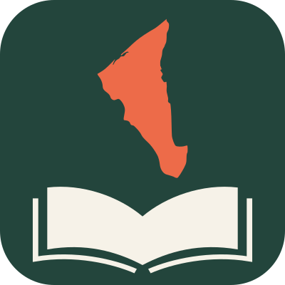

Bahasa Tutong
Everyday essentials
Eight useful words. Start with flashcards, then check what you remember.
Tutong is ready. Loading Brunei Malay and Dusun…
Discover Tutong, Brunei Malay and Dusun. Search a word, then make it part of your day.

Everyday essentials · 8 words · flashcards and a quick check
Choose a short lesson, explore a phrase, or practise the words you saved.
Eight useful words. Start with flashcards, then check what you remember.
Greetings and expressions, with Malay and English translations and source notes.
Build confidence from 1–10 to 100 and 1,000, with recorded examples and short checks.
Build small study lists across all three languages, then revisit the words you missed.
Eight useful words. Flip each card, then test what you remember.
Explore Tutong, Brunei Malay and Dusun, with Malay and English meanings.
Source notes and review labels are included. Some entries still need checking by speakers.
Try another spelling or choose “All”.
Everyday phrases, greetings and expressions from the three collections.
Source notes and review status stay visible. Some entries still need checking by speakers.
No recorded phrases in this category yet. Try another language or category.
Learn the basics, compare how numbers build, then explore 100 and 1,000.
Source notes and review status stay visible. Some entries still need checking by speakers.
When the words are hidden, tap a number to reveal it. Recorded variants remain separate from confirmed corrections.
Brunei Malay number entries have not been added to this collection yet.
Saved words, small study lists and a little practice when you need it.
Saved words and progress stay in this browser.
Open “Study lists” on a word to add it to this list.
Tap the heart on a dictionary entry to keep it here.
Help make this living reference more useful for everyone.
Bahasa Kitani is an independent, solo-developed and solo-maintained work in progress. The site preserves its original Bahasa Tutong learning experience while gradually adding separate Bahasa Melayu Brunei and Dusun Brunei collections.
Vocabulary from different sources may contain spelling, meaning or regional variations. Draft entries are not presented as community-verified until checked.
Contact: sam@bahasa-kitani.xyz.
Entries draw on community contributions and DBP Kamus Tutong–Melayu (1991), as credited in the original dictionary. This is a community learning resource; spellings, translations, and regional usage may need further review.
Help add context: share an example sentence with its Malay or English meaning, or a pronunciation recording with the speaker’s permission. Examples and audio need review by fluent speakers before appearing on entries.
Support Bahasa Kitani ↗ · Sam’s socials ↗
One search across three languages, a Learn hub for lessons, phrases and counting, and My Words with study lists, practice and a review queue. Progress backups include your lists and review words.